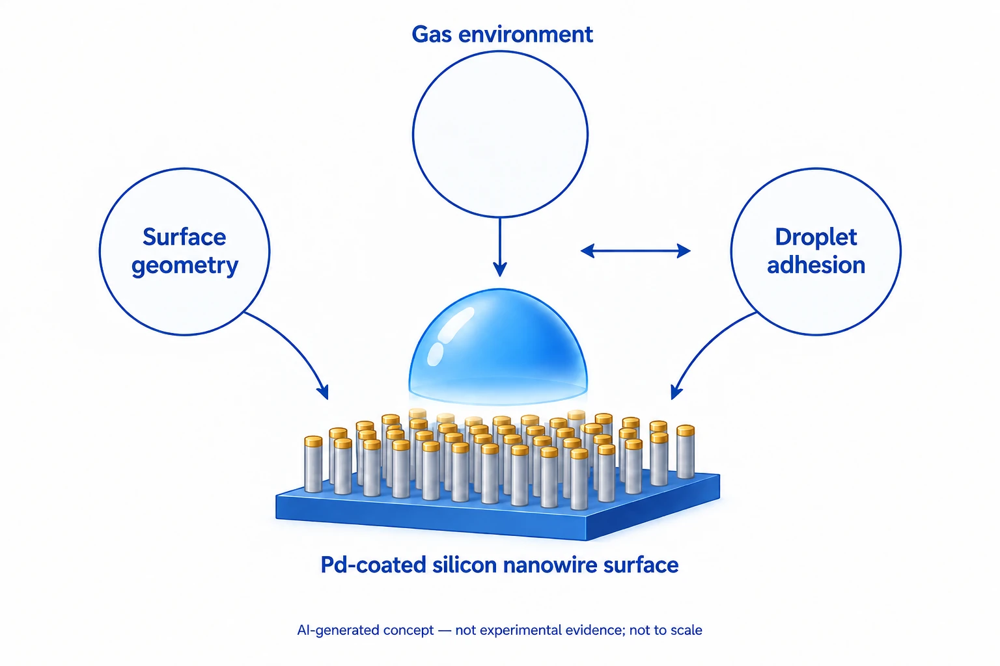

Overview
This study, co-authored by Jungmok Seo (then at the Nanobio Device Laboratory, School of Electrical and Electronic Engineering, Yonsei University), who now leads the BLISS Lab at Yonsei University, switched the water adhesion of a superhydrophobic surface by changing only the surrounding gas. Dodecyltrichlorosilane (DTS)-coated, palladium (Pd)-tipped silicon nanowire (Si NW) arrays pinned water droplets in 2% hydrogen (H2) and returned to water-repellent within 3 seconds in air, and the switching was repeated for 50 cycles.
Background
Superhydrophobic surfaces are usually either water-repellent, letting droplets roll off, or water-adhesive, pinning them, and switching between the two on one substrate requires control of surface roughness or surface energy. An earlier approach switched adhesion through a thermally induced phase transition of a coated liquid crystal polymer, but heating can evaporate the droplet and cooling is slow; a later ultraviolet-driven approach with a photosensitive polymer coating switched adhesion within a minute.
Design and approach
Vertical Si NW arrays were etched by the aqueous electroless etching (AEE) method in 30 mM AgNO3 mixed in 4.9 M HF at 70 °C for 30 minutes. Pd was then sputtered by DC magnetron sputtering at 3 × 10⁻⁷ Torr; because of poor step coverage, most Pd deposited at the wire tips, where the wires bundle into clusters spaced 1.3 to 3.7 μm apart. The arrays were made superhydrophobic by dip-coating in 3 mM DTS in hexane for 30 minutes and baking at 150 °C for 1 hour. In H2, the Pd layer converts to PdHx and expands, enlarging the cluster tips in contact with the droplet and raising the contact line pinning force; in air, H desorbs and the Pd contracts.

This AI-generated, not-to-scale concept diagram shows the relationship between gas environment, surface shape and droplet adhesion on palladium-coated silicon nanowires. The studied DTS treatment and actual coating structure are omitted. It does not reproduce experimental results.
Generated for this library to illustrate the design; it is not a figure from the paper and does not show measured data.
How it was evaluated
Droplets of approximately 8 μL were released on arrays with a Pd thickness (tPd) of 40 nm tilted by 5° in air and in 2% H2, inside a chamber in which H2 was mixed with air near atmospheric pressure. Static contact angles (CAs) were averaged over more than five locations, wire clusters were imaged by in situ atomic force microscopy (AFM) in air and 8% H2, and the pinning force (Fpin) was estimated from the sliding angle (θSA) as a function of tPd and H2 concentration. Patterned switching, droplet transfer and mixing were demonstrated as applications.
Key results
In air, droplets rolled off 0.03 seconds after drop-casting at a velocity of 12.58 cm/s, whereas in 2% H2 they were pinned; re-exposure to air restored the water-repellent state within 3 seconds. The static CA was 159 ± 1.33° in air and 155 ± 2.17° in 2% H2, so the surface remained superhydrophobic in both states, and the adhesion switching was reproduced over 50 cycles of alternating air and H2.
In situ AFM showed the clusters enlarging in 8% H2, with the root-mean-square (rms) roughness increasing from 400.1 to 442.1 nm, and returning to 404.3 nm after re-exposure to air. As tPd increased from 0 to 100 nm, the solid fraction in contact with the droplet increased from 0.11 to 0.21.
For tPd below 10 nm, no switching was observed and droplets rolled off at θSA ≈0° in both atmospheres. Fpin increased by more than 8.15 times in H2 for tPd of 20 to 50 nm and by less than 4.2 times above 50 nm. Switching was not observed below about 2% H2; above this threshold, Fpin rose with H2 concentration, and above 8% H2 the sliding angle exceeded 90°, so an 8 μL droplet stayed on a vertical or upside-down substrate.
With a shadow mask, dyed droplets were pinned selectively on patterned regions spelling "YONSEI" and "ADV MAT" in 2% H2 (tPd 40 nm), and diluted rat blood, coffee and a CdSe nanoparticle suspension were also pinned selectively. Used as a droplet tweezer in 8% H2, the arrays picked up a droplet from a water-repellent surface and mixed an 8 μL red-dyed droplet with a blue-dyed droplet without water loss.
Related research
How to Make Water Run Uphill
DOI: 10.1126/science.256.5063.1539 ↗
The related paper’s abstract describes a fixed surface-energy gradient for moving droplets. Here, the surrounding gas changes the adhesion state.
Abstract-based introductionRESEARCH NEWS
Research in the news
Sources used in this summary
This summary is based on the publisher PDF of the communication, including the Experimental Section and figure legends; the Supporting Information (Figures S1 and S2 and videos) was not reviewed, so results shown there are reported only as described in the main text.